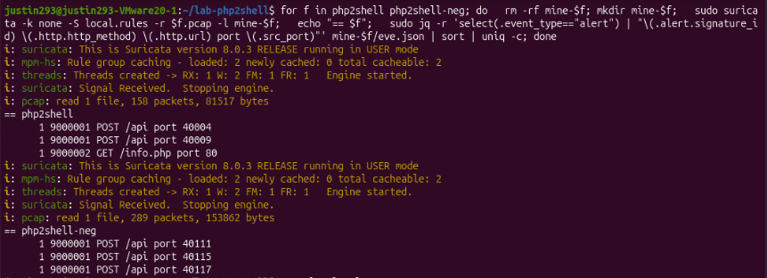

PROJECT DEEP DIVE
PHP2Shell Detection Engineering & Suricata Rule Tuning
DETECTION ENGINEERING & THREAT HUNTING
Conducted a comprehensive threat analysis and detection engineering lab targeting the PHP2Shell vulnerabilities (CVE-2026-109618 and CVE-2026-109619). Analyzed malicious PCAP traffic captures, evaluated Emerging Threats (ET) Suricata rules, and authored custom detection signatures with PCRE tuning to balance true positive detection against false positive rates.
Part 1: Packet Forensics & Traffic Analysis
- Baseline vs. Attack Comparison: Inspected positive (`php2shell.pcap`) and negative (`php2shell-neg.pcap`) traffic captures against an Apache/2.4.58 and PHP/8.3.35 server stack.
- Anomaly Identification: Isolated atypical multipart upload structures, oversized 70KB application form inputs, and serialized PHP array payloads (`a:`) sent to API endpoints.
- Validation Assessment: Differentiated between reconnaissance activity (`/info.php`), stress testing, and potential exploit framing.
Part 2: Emerging Threats Rule Evaluation
Tested and verified the performance of existing ET Suricata signatures:
- Successful Alerts: Triggered high-confidence alerts on SID 2072549 (Header Amplification) and SID 2072556 (Excessive Multipart Part Count).
- False Positive Auditing: Verified zero false positives from baseline traffic on negative captures while documenting why specific signature criteria failed to match.
Part 3: Custom Rule Authoring & PCRE Tuning
Authored and refined custom Suricata HTTP inspection rules (`local.rules`) to capture serialization attempts and server version banners:
# local.rules - Custom Detection Signatures
# Rule 1: Detects PHP serialized array payloads sent to the API endpoint
alert tcp any any -> any 80 (msg:"LOCAL Tuned PHP2Shell Serialized Array Payload"; flow:to_server,established; content:"POST"; http_method; content:"/api"; http_uri; content:"a:1:{"; http_client_body; sid:9000001; rev:2;)
# Rule 2: Detects vulnerable Apache and PHP server response banners
alert tcp any 80 -> any any (msg:"LOCAL Vulnerable Apache and PHP Version Banner Response"; flow:from_server,established; content:"Apache/2.4.58"; http_header; content:"PHP/8.3.35"; http_header; sid:9000002; rev:1;)
- Initial Rule Iteration: Created Rule 9000001 targeting POST requests to `/api` containing serialized strings (`a:`), which successfully detected threats but introduced false positives on benign baseline traffic.
- PCRE Optimization: Tuned the signature to enforce strict PHP array serialization structures, successfully reducing false positive alert noise while maintaining true positive fidelity.

Tuned Evaluation: Suricata execution showing optimized rule performance and reduced noise on target PCAP captures.
Technologies & Tools
Tools: Suricata 8.0.3, jq, Wireshark, PCAP Analysis Utilities, Linux Command Line
Skills: Detection Engineering, Suricata Rule Authoring, PCRE Regex Tuning, False Positive Mitigation, Threat Intelligence, Packet Forensics